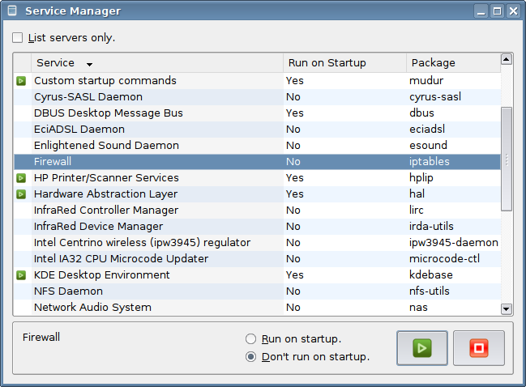
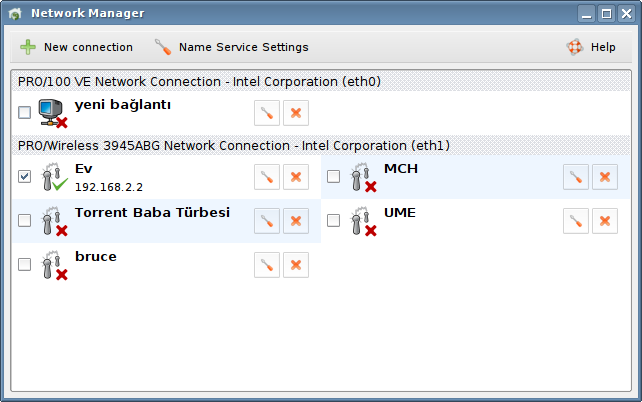
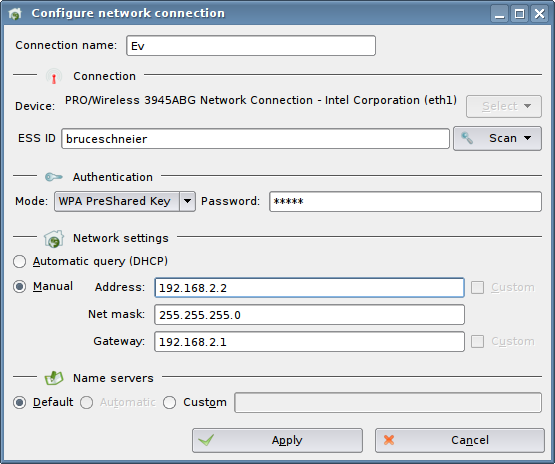

Python in Pardus
A.Murat Eren, Barış Metin, Gürer Özen
1 Introduction
Python is a dynamic object-oriented programming language used for different software development aspects. At least, that it what its homepage says. It is actually utilized by a range of companies from Google to Firaxis Games[1] in distinct areas. Some Linux distributions use it for developing their tools, mostly user interfaces.
Python is also used almost everywhere in Pardus, from startup system to user interfaces. This wasn't intentional. We started using Python in a few places for rapid development, however while most of the core developers learned Python after joining the project, the use of Python spread almost every areas of Pardus development.
In this report, we give a summary of our Python experience, how it is used in Pardus GNU/Linux distribution, and what sort of problems encountered.
2 Package Management
Package management is the key part of a software distribution. Users expect it work robust and in an automatic fashion. Packagers want to package their software without going through complex build procedures. Developers want to quickly deploy their patches to the users. Distribution maintainers want automated tools for validating, analyzing and building the software collection. Finally third parties want to embed and extend core distribution into their own specialized releases.
Our custom package management system PiSi is designed to meet those requirements. You can find more information about general design in the PiSi article[2].
Package Specification
Package is a collection of files and some meta information about what software the corresponding package includes, how it is going to be installed, and its dependencies. A binary package is usually build from a specification which describes the original source, patches added by the distribution and build instructions. We keep those specifications inside a Subversion repository, one directory per package, neatly organized in component directories.
Since specification contains both data (like software name, homepage, version, description, license, location of the original source, list of the patches, etc) and programs (build instructions, install instructions, remove instructions, etc), we decided to keep this information in a seperate fashion. That way, parsing and using the data becomes really easy.
Avoiding new ad-hoc formats, and keeping everything simple as it can be, we decided to put data into an XML file. Data is very structured, and some items (like description) have translated versions as well, so everything fits nicely in the XML format.
Deciding about programs was harder. Ideally all programs (build, install, remove scripts) should be written in same language. Packager only has to know one language, and maintenance becomes a lot easier.
Traditionally build scripts were shell scripts. Shell is ideal for simple tasks requiring batch run of a series of commands. Unfortunately there are cases where you need conditional operations, do string processing, and iterate an operation over a series of data. In those cases shell syntax becomes awkward, debugging and maintenance costs go higher.
In simplest case of build operation (configure; make), there isn't much difference between alternative languages. But when cases get more complex, you'll definitely want a language with rich set of datatypes, native support for strings, clean and concise syntax and a standart library with a wide range of useful functions. This language shouldn't have a steep learning curve, and shouldn't look too different from shell scripts or shouldn't require a complete paradigm change for system admins and packagers (like some pure functional languages).
We concluded that Python successfully meets these requirements, and is the best choice for package scripts.
Build Scripts
After implementing a proof of concept for package manager, we started making packages. In a six months of time, with six developers, we managed to make packages of base system (kernel, drivers, glibc, gcc, gnu tools), desktop (xorg, KDE), and applications (Gimp, TeTEX, K3b, mplayer, OpenOffice.org, etc). There were a total of 600 packages which are bootstrapped and build on a Pardus system. Now a year after, we have 1227 packages in our official repository[3] and 698 packages in an extra contribution repository[4], built by circa 25 developers.
In the official repository, there are 32641 lines (where 8044 of them are comment lines) of Python code for packages. Script for one of the simple packages, gparted, is given below:
-
#!/usr/bin/python
# -*- coding: utf-8 -*-
#
# Copyright 2005, 2006 TUBITAK/UEKAE
# Licensed under the GNU General Public License, version 2.
# See the file http://www.gnu.org/copyleft/gpl.txt.
from pisi.actionsapi import autotools
def setup():
autotools.configure()
def build():
autotools.make()
def install():
autotools.install()
As you see, there isn't much information in this script, everything is handled by the autotools module. A generic utility module and a few such build system modules (for autotools, scons, cmake, perl and python extensions) are provided by package manager (in the pisi.actionsapi package). Stages of the build process are represented by three Python functions.
Here is another slightly complex example function from the LyX package:
-
def setup():
viewers = { 'PDF': 'kpdf',
'PS': 'kghostview',
'DVI': 'kdvi',
'HTML': 'konqueror' }
for k in viewers:
shelltools.export(k + '_VIEWER', viewers[k])
autotools.configure("--with-frontend=qt")
As you see, some defaults are modified via environment variables before configuring.
There aren't many complex build scripts. Most of the logic and error checking is handled by provided utility modules (ActionsAPI). Scripts requiring complex operations and interactions are managed by our configuration management system called Comar. PiSi merely passes those scripts to Comar. Examples of them are given in the system configuration section of this article.
Package Manager
PiSi itself is written in Python too. This is a huge deviation from other well known package management software (Red Hat's RPM or Debian's dpkg which are both written in C).
PiSi architecture is quite different from traditional designs. Every functionality, related to the package management like installing, building, fetching, dependency solving, repository management, validating is included in the core (compare with dpkg, apt-get or rpm, urpmi separation). PiSi can work with both binary repositories, and source packages like Gentoo's portage. On the other hand, package configuration (like calling ldconfig, modifying global configuration files, etc) is delegated to Comar.
PiSi source[5] is 14245 lines of Python code distributed in 72 modules in 6 packages. Command line driver (pisi command) is just a simple front-end to all those modules. They can also be used together or partially by other programs. There are also a few more scripts, and a comprehensive test suite containing both unit tests, and full scenario tests.
An example test scenario (scenarios/bug3481scen.py in PiSi source) is like this:
-
from pisi.scenarioapi.scenario import *
HASHALOT="hashalot"
COREUTILS="coreutils"
GLIBC="glibc"
UTIL_LINUX="util-linux"
let_repo_had(HASHALOT, with_partof("system.base"))
let_repo_had(COREUTILS, with_partof("system.base"))
let_repo_had(GLIBC, with_partof("system.base"))
let_repo_had(UTIL_LINUX, with_partof("system.base"))
let_pisi_had(COREUTILS, HASHALOT, GLIBC, UTIL_LINUX)
def run():
repo_version_bumped(GLIBC)
repo_version_bumped(UTIL_LINUX)
repo_version_bumped(COREUTILS, with_added_conflicts(HASHALOT))
repo_updated_index()
pisi_upgraded()
It is as readable as pseudo code, yet it works too.
A package management software deals a lot with sets, lists, and dependency graphs. Python has former two in a native way, and implementing latter is very simple with available primitives. Object oriented nature of Python, with module and package concepts, kept the code very modular and well structured. We have extensively used functional operators (map, filter, reduce) and list comprehensions, even metaclasses are used in a few places.
Here is an example from the diff package (they are for updating a package with minimal network data transfer) generating code:
-
files_all = set(map(lambda x:(x.path, x.hash), files.list))
files_old = set(map(lambda x:(x.path, x.hash), oldfiles.list))
files_delta = files_all - files_old
From two file lists of the old and new packages, modified file list is extracted with maximum simplicity and clarity.
An other reason to choose Python was its standard library. Although some parts of it (XML modules) are extremely slow and hard to use, and some parts (os, shutil, zipfile) needs a few wrappers to get it right, we have used quite a number of standart modules (like cPickle, re, unittest, subprocess, getopt, gettext, zlib, bz2, tarfile, urllib2, urlparse, sha). More information about our problems with the standard library can be found in problems section of this article. But all in all, they helped greatly by allowing us to reuse already tested components instead of writing everything from scratch.
We have only encountered a speed problem with XML parsing, which we solved by first migrating to 4suite parser, then our custom module. Currently there is a slowness only within certain database operations, but that is mostly caused by suboptimal use of BerkeleyDB, and will be fixed in the next major release. Most of the PiSi work is bounded by disc IO and heavy calculation parts like dependency solving work really fast, if carefully coded by using as much as built-in functions of Python.
A reason to code in C could be that you can statically compile everything into an executable, and run that even if every library in the system is broken. That is a tradeoff, we decided to face. Currently PiSi depends on a minimal Python installation (with its library, and a few of modules), BerkeleyDB, piksemel (our XML python module) and glibc. Since those packages are required for operation, PiSi takes extra care while updating them.
User Interfaces
Main desktop environment of the Pardus is KDE. Python bindings[6] of the KDE are highly maintained and very comprehensive. Every component of the desktop, be it an application, a control center module, an IO handler module, or a panel applet, can be written in Python. Similarly you can use almost any component like khtml from Python.
Graphical user interface of the PiSi is 2558 lines of Python code. This includes both a control center module, and a panel applet for regularly checking repositories and showing available updates.

Another application using PiSi is Pardusman, a tool for making release media. You can select packages from a binary repository and easily make a live or install CD with a few clicks. It is 1481 lines of Python code.
As you see, PiSi user interfaces are very short, yet quite capable programs. Coding in Python saves quite a bit of boiler plate code when compared to C++. Subclassing a window is just a class MyWindow(QMainWindow) line for example.
3 System Configuration
Configuring software and hardware is the most boring task, a user can do with a computer. Installing a program can require setting up some system variables. If you want to connect to the Internet, you have to set up some options of the network interface device, maybe even run some programs to handle the connection. Your hardware needs some kernel modules loaded, and some programs run to start operating. You may need to edit your xorg.conf file to be able to use native resolution of your LCD.
Hopefully most of these tasks can be automated, and other can be greatly simplified.
Our configuration framework Comar is designed to do that. Explaining all the details needs a separate article. We are going to layout only the general architecture here. So, basically,
- Configuration tasks are defined in a system model, grouped by classes which contain related tasks.
- Each software package can carry small configuration scripts for these classes.
- A class can be provided by different packages, also a package can provide different classes.
- When you call a configuration task, configuration script drives the package to do this job, by modifying its configuration file, sending signals, calling commands or using whatever mechanism is necessary.
- You can ask a task from a specific package, anyone who can do that job, or everyone providing that class.
- There is a daemon who keeps registered classes, listens for configuration calls, and runs the scripts.
- This daemon handles access control, so you can delegate some configuration permissions to normal users.
This architecture has quite a number of advantages. What we are interested here is that the actual logic of the configuration tasks are carried within package scripts. That way, packages are well encapsulated, different versions can have different ways of doing same tasks.
Theoretically these scripts could be in any language. But there are many practical problems with that. Maintenance becomes harder with a big repository with scripts written in all sorts of languages. Function calling and parameter passing needs to be implemented for all those languages.
Since we already used Python in build scripts, also using it in configuration scripts came up as a natural choice. Several advantages are,
- Packagers need to know only one language,
- Comprehensive standard library with a wide range of extensions is available to use in scripts,
- Every feature of the Python is accessible and controllable from the Python C library,
- Scripts can be called by all users. They must have permission to make the call beforehand, but since script itself runs with a higher privilege, an interpreted language with garbage collection is very helpful against buffer overflow type attacks caused by malformed parameters from users.
- Comar daemon[7] listens configuration requests and, if user has permission to do that, forks a job process for each call. This job process loads up package script and run it. That way configuration operations can run in parallel, and self contained.
We first tried to write this daemon in Python too, but changed to C later. Reason is that daemon is very small (6216 lines of C code) and very low level, there isn't much to gain from Python. Since Python interpreter is not even initialized in main process, resource usage is very low when there isn't a configuration job is running.
There are some common operations among the Comar scripts which are not covered by the standard library. These functions and a binding class for making Comar calls is included in a Python package. Here is an example using that Python binding:
-
import comar
link = comar.Link()
# Set some address parameters of a network connection
link.Net.Link.setAddress(name="Home Network", address="192.168.3.165",
gateway="192.168.3.1")
# Query all system services
link.System.Service.info()
# Read a result from the query
reply = link.read_cmd()
print reply.script, reply.data
These calls and their results are transferred to and from the Comar via a Unix socket internally.
In the current release of Pardus, package installation, system startup, display configuration, network and firewall configuration, user management, time and settings are all carried to the Comar. Scripts and graphical user interfaces are coded and running. More subsystems like power management and storage management are in progress. A few examples of current usage is given below.
Boot Subsystem
There is a separate article[8] on our boot subsystem (called Mudur, means director in Turkish). We are going to give a summary of Python related features here.
System is made of a single Python script which handles basic initialization (starting udev, mounting filesystems, etc), and a System.Service Comar class with methods like start, stop, info, etc. Services are controlled by their Comar scripts. There are also a few tools (update-modules, update-environment, etc) rewritten in Python. Another Python agent deals with loading kernel modules and firmware for hardware, for both coldplugging and hotplugging.
In total of 2345 lines, Mudur makes Pardus one of the fastest booting operating systems, with a highly maintainable, completely and easily localizable boot subsystem. Now in most configurations, KDM login screen comes in 15-20 seconds.
Network Subsystem
Basic class of the network system is Net.Link which defines a way (ethernet cable, wireless, ppp, vpn, etc) to connect a network. For an example, link.py script[9] from wireless-tools package implements wireless connection with manual or automatic network configuration, WEP and WPA encryption, scanning, automatic detection of devices, and other basic functionality in 489 lines of Python code.
This is because most of the actual functionality is already implemented by tools like iwconfig, iwlist, dhcpcd, wpa_supplicant, etc. We just needed to configure and use them according to user's wishes. This is very easy with Python, you can just import dbus, and for example talk to the WPA service with a few lines, unlike a C or shell based implementation.
User interfaces can use this link providers in a highly generic way without caring about implementation details, since this is done over the Comar service, fine grained access permissions can be given to users.
There are other classes for firewall and name service configuration.
Graphical user interface itself is 2450 lines of Python code, including a panel applet.

Other Examples
Naturally package configuration is done with Comar too. Each package can provide a setup script with postInstall and preRemove methods. Additionally some packages would register their scripts on another class for operating on other packages' install and removal. That way, you can write scripts for operating on special kind of packages or files, like fonts, kernel modules, libraries, etc. Packages can inspect and register their plugins without providing each one with a script.
User management is another aspect handled by Comar.


Pardus is able to detect native panel size for most of the LCD monitors, and has a very good Xorg auto-configuration system[10] called “zorg”. A task-based user interface for controlling important aspects, and especially multi-monitor situations is under development.
We are developing an enterprise management system for controlling a network of computers. It is going to take global configuration policies from an LDAP server, and apply to the local system with Comar framework. Thus Comar will slowly cover all areas of the system configuration in the future.
4 Applications and Scripts
Our installation program YALI[11] is composed of 7521 line of Python code. Although it basically uses PiSi and Comar for installation, there are many hardware related modules, like a partition manager which contributes to the size. GUI code is also a bit big, because installation environment only has Qt widgets running on a bare X Window server.

There is a KControl replacement we wrote, which uses both KDE control center modules, and our control center modules written in Python.
Our buildfarm software[12] is 878 lines of Python. Checks out package descriptions from subversion repository, finds new releases, builds them, builds the other packages requiring recompile, sends packaged binaries to the file server. We are looking for a web based interface for the build farm, probably based on Django.
There several small scripts, validating the integrity of package repositories, generating web pages for packages, and countless smaller scripts for doing one time jobs written.
5 Custom Modules
In the process of Pardus development, we have encountered some common problems, and wrote some generic modules[13] to deal with them.
piksemel
Unfortunately XML module of the standard Python library is too slow for serious usage. Parsing the package content information of the TeTEX PiSi package (a 2.137.893 byte XML file), for example, takes almost two seconds on a 1.66 GHz dual core Intel processor. Another problem is the API is cumbersome to use, and quite un-Pythonic.
We first switched to 4suite package, and gained quite a bit of speed. Then wrote our own module based on iksemel library. It is very small (designed mainly for embedded systems) and much faster than other parsers. We have added a Python API around it, which is designed to be easy to use and more Pythonic.
Here is a simple parsing example:
-
doc = piksemel.parse("files.xml")
for fileinfo in doc.tags("File"):
print fileinfo.getTagData("Name"), fileinfo.getAttribute("size"), "bytes"
And you will see a simple tree building example below:
-
doc = piksemel.new("PiSi")
source = doc.insertTag("Source")
source.insertTag("Name").insertData("glibc")
source.setAttribute("note", "test")
print doc.toString()
catbox
Sandbox is a mechanism which provides a tightly-controlled set of resources for guest programs to run in. They are used in build systems for, constraining packages to the temporary build directory, keeping track of permission changes thus allowing non-root builds, and other similar purposes.
There are two feasible ways to build such a sandbox. Intercepting glibc function calls with LD_PRELOAD, or Linux system calls with ptrace. Former way makes it difficult to implement interaction between PiSi and build script (both are Python programs).
There is already a good ptrace sandbox framework for Python, called Subterfugue. Apart from a small C binding for ptrace call, it is completely written in Python. Unfortunately dealing with each system call with Python is quite slow for a build farm. There are over a thousand packages, and some of them like OpenOffice.org or kdebase takes a huge time to compile even on high end computers.
Thus we wrote catbox, a small sandboxing C module for PiSi.
pyaspects
Like all others Pardus installation program uses a wizard based installation routine, changing screens back and forth. We wanted to use the advantages of aspect-oriented programming methodology to deal with the cross-cutting concerns in these screen switchings. That is how PyAspects started its life first as a package in YALI and became a separate module later on. Basically PyAspects is a collection of modules to ease aspect-oriented programming in Python language.
Simple weaver:
-
from pyaspects.debuggeraspect import DebuggerAspect
from pyaspects.weaver import *
d = DebuggerAspect()
class C:
def hello(self):
print "Hello there!"
def hola(self, name):
print "Hola coma estas %s?" % name
> > > weave_all_class_methods(d, C)
> > > c = C()
> > > c.hello()
Entering function: hello (args: () -- kwargs: {})
Hello there!
Left function: hello (args: () -- kwargs: {})
> > > c.hola("Pardus")
Entering function: hola (args: ('Pardus',) -- kwargs: {})
Hola coma estas Pardus?
Left function: hola (args: ('Pardus',) -- kwargs: {})
Creating a new aspect (from YALI, Pardus installer):
-
from pyaspects.meta import MetaAspect
##
# Disables navigation buttons before method.
class DisableNavButtonsAspect:
__metaclass__ = MetaAspect
name = "disableNavButtons"
def before(self, wobj, data, *args, **kwargs):
ctx.screens.disableNext()
ctx.screens.disablePrev()
def after(self, wobj, data, *args, **kwargs):
pass
6 Problems
We have encountered several problems with some parts of the standard library. Since we deal with all sorts of weird tar archives during the build, corner case errors in tarfile module emerged quickly[14]. Another related problem is in zipfile module. Since there is no way to incrementally extract files from zip archives (pisi packages are zip archives), extracting big files (like install.tar.lzma of OpenOffice.org) causes too much memory usage. We fixed that with a hacky insertion of another read() variant into the ZipFile class.
As said before, performance and usage problems of xml.dom API forced us to use a custom parser module for those operations.
There are also many smaller errors encountered during the development, which a few of them[15] reported/patched by us, and others got fixed by other parties along the normal Python development process.
Python's insistence of using the ASCII encoding caused some annoyance, since we use UTF8 everywhere, and our main locale (tr_TR.UTF8) have some characters outside of ISO Latin 1.
We have started with 2.3 release, and moved on to 2.4 before Pardus 2007. Now we are getting ready for the Python 2.5 series. API/ABI breaking changes caused some minor work, but they are generally well documented, so never got out of control.
7 Conclusion
We have created a whole new distribution with custom package and configuration management tools from scratch in almost two years. We didn't have the know-how of making a distribution when we started, so development time can be considered very fast.
Once we finished the design processes, we quickly build prototypes of the tools and started using them. We even made a few throwaway versions the examine some design decisions. Rapid development nature and quick refactoring capabilities of the Python helped us greatly.
Core developers learned it in a few days, outside developers/packagers, even the users are very quick to learn our tools. Learning curve of the Python is very smooth. You can start using it like Basic, then move on to next levels by learning object oriented and functional programming paradigms.
Even with the problems mentioned in the above chapters, standard library is great, and many important environments like Qt and KDE have excellent Python bindings.
We are not only happy with our choice, but looking forward to use high level languages in more places.
References
- [1]
- Quotes about Python, http://www.python.org/Quotes.html
- [2]
- Pisi article, http://www.pardus.org.tr/eng/projects/pisi/PiSi.html
- [3]
- Official package repository, http://svn.pardus.org.tr/pardus/devel/
- [4]
- Contrib package repository, http://svn.pardus.org.tr/contrib/
- [5]
- Pisi source, http://svn.pardus.org.tr/uludag/trunk/pisi/
- [6]
- PyQt and PyKDE, http://www.riverbankcomputing.co.uk/pyqt/
- [7]
- Comar system service, http://svn.pardus.org.tr/uludag/trunk/comar/comar/
- [8]
- Mudur article, http://www.pardus.org.tr/eng/projeler/comar/SpeedingUpLinuxWithPardus.html
- [9]
- Wireless script, http://svn.pardus.org.tr/pardus/2007/system/base/wireless-tools/comar/link.py
- [10]
- Zorg, display auto-detection system, http://svn.pardus.org.tr/uludag/trunk/comar/zorg/
- [11]
- Pardus installer, http://svn.pardus.org.tr/uludag/trunk/yali/
- [12]
- Pardus build farm software, http://svn.pardus.org.tr/uludag/trunk/buildfarm/
- [13]
- Pardus python modules, http://svn.pardus.org.tr/uludag/trunk/python-modules/
- [14]
- Python tarfile errors, bug1, bug2, bug3
- [15]
- Misc Python bugs, bug1, bug2, bug3, bug4
Information and documents on Pardus web pages can be used freely anywhere with original source credit.
For information and suggestion(s) please write to bilgi_at_pardus.org.tr
TÜBİTAK - UEKAE, PK.74 41470, Gebze / Kocaeli.